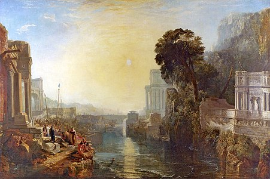
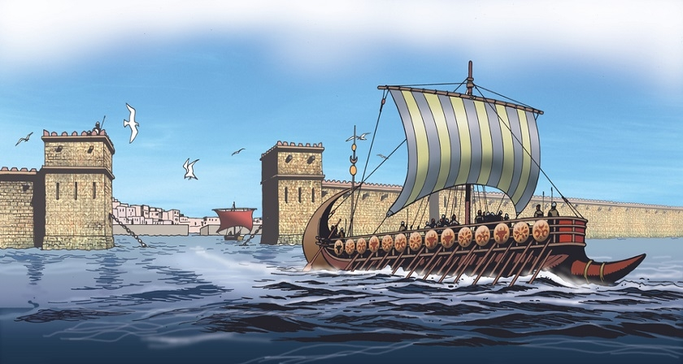
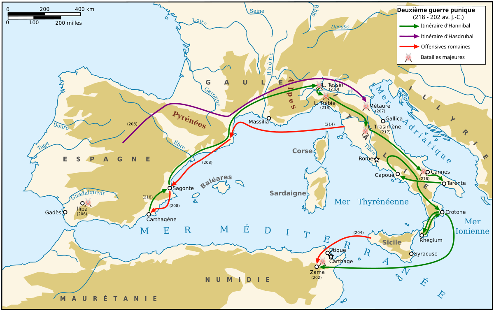
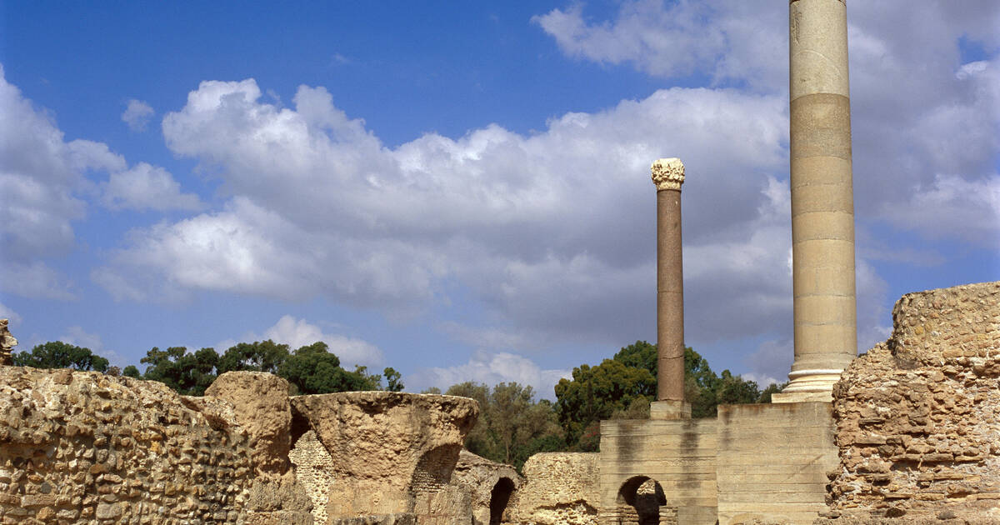

Tunisie : Mémoire des Civilisations
La Naissance d'une Puissance
Fondée au IXe siècle avant J.-C. par des Phéniciens venus de Tyr, Carthage s'impose rapidement comme une puissance majeure en Méditerranée occidentale. Son emplacement stratégique sur la côte tunisienne en fait un carrefour commercial important et un centre de rayonnement culturel.
Un Empire Commercial et Maritime
Carthage développe un vaste empire commercial, s'étendant de l'Espagne à la Sicile. Sa puissante flotte domine la Méditerranée, assurant la prospérité de la cité grâce au commerce de produits précieux, tels que l'ivoire, l'or et les esclaves.
Les Guerres Puniques et la Chute de Carthage
La rivalité croissante entre Carthage et Rome conduit aux Guerres Puniques, une série de conflits qui s'étendent sur plus d'un siècle. Malgré la résistance acharnée d'Hannibal Barca, Carthage est finalement vaincue et détruite par les Romains en 146 avant J.-C., marquant la fin de son empire.
L'Héritage Carthaginois
Malgré sa destruction, Carthage laisse un héritage important. Son influence sur le commerce, la navigation et l'art a marqué la Méditerranée occidentale. Des vestiges archéologiques, tels que les ports puniques et les tophets, témoignent de la grandeur de cette civilisation.
Site archéologique de Carthage
Explorez les vestiges de l'ancienne Carthage et découvrez l'histoire fascinante de cette civilisation qui a marqué la Méditerranée.